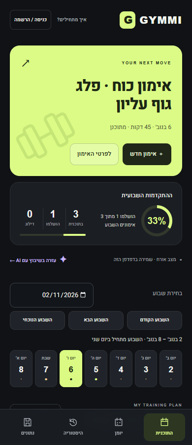
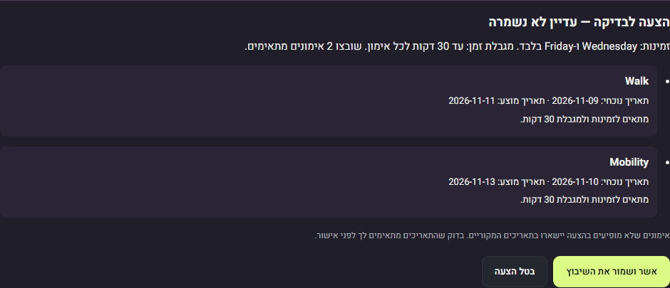
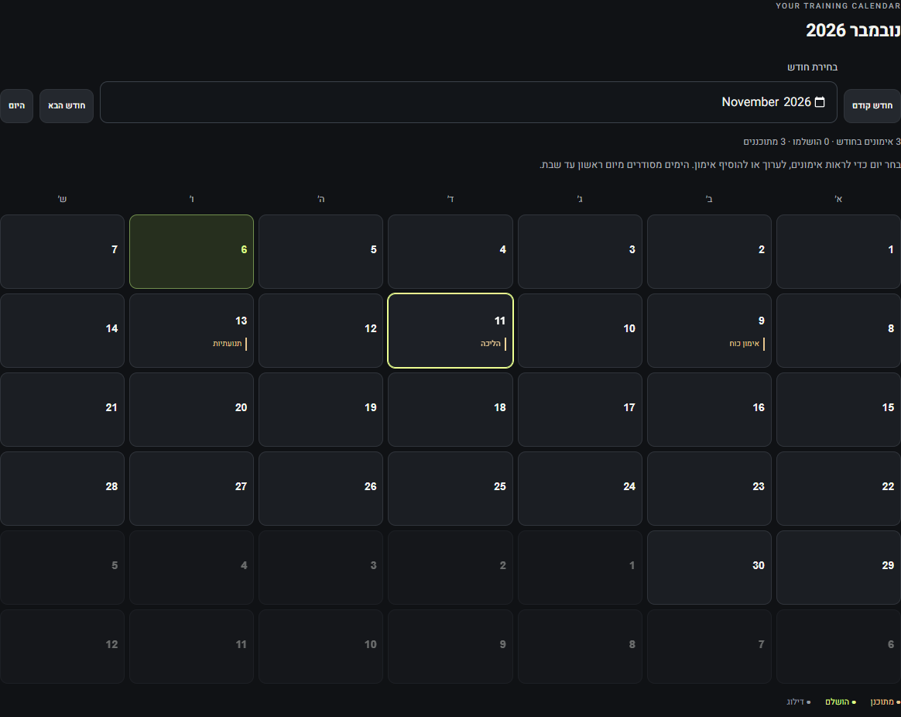

Gymmi AI
A weekly workout plan with AI scheduling
A public student MVP with a private cloud journal
Matan Roditi AI Development final project

Actual product UI in Hebrew. Sample guest data.
A weekly workout plan with AI scheduling
A public student MVP with a private cloud journal
Matan Roditi AI Development final project
01 Plan the week with dates, duration and routine details.
02 Describe your availability and review an AI scheduling proposal.
03 See the completed share of your weekly plan.
04 Review the monthly calendar and load your journal on another device.
Example: one completed workout out of three planned.
Next workout A clear starting point with saved routine details.
Weekly progress A completion ring calculated from the workout journal.
Focused forms Workout and account dialogs keep the plan visible.
Mobile navigation A day strip, bottom navigation and skippable onboarding.

Browser app HTML, CSS and JavaScript. Forms, calendar and progress.
Supabase Auth identifies the user. Postgres stores the journal. RLS checks ownership.
OpenAI gpt-5.4-mini interprets availability. The server validates its proposal.
The Edge Function keeps the API key in Secrets. Approved dates use the same revision-protected save.
01 Read availability and existing workout metadata.
02 Ask the model for a structured weekday proposal.
03 Validate ids and dates, then show a preview.
04 Save the approved dates with revision checks.

Select a day to see, add or edit workouts.
AI-approved dates appear in the same journal.
Open a Google event draft or download planned workouts as ICS.
Manual export only. All-day events; no automatic or two-way sync.

| Area | Groups | Examples | Run scope | Result |
|---|---|---|---|---|
| Redesigned UI | 6 | Five viewport widths | Public app | Passed |
| Onboarding | 8 | Navigation and drafts | Public app | Passed |
| Mobile signup | 6 | Login and cloud save | Public app | Passed |
| AI planner | 8 | Real calls + mocks | Local + backend | Passed |
Chrome viewport checks cover 320 to 1365 px. No physical-device test.
The AI regression used two real calls. Invalid and stale outputs use labelled mocks.
Cursor is the code editor. Git records changes on a feature branch.
A commit records a change. Push uploads it to GitHub for a pull request.
Merge into main publishes docs/ through GitHub Pages. The server function deploys separately.
Real examples: PR #9 adds AI scheduling. PR #16 redesigns the interface.
Open the public app, sign in and add a workout for today.
Mark it complete, show the progress ring and reload.
Add two short workouts to next week. Review and approve an AI proposal.
Show the dates in the monthly calendar, then show one merged PR.
Production: public HTTPS app, GitHub source and cloud accounts.
AI: an existing language model proposes dates; the user reviews and approves.
Calendar: manual Google drafts or ICS export; all-day events with no automatic sync.
RPG is visual. Trained ML and CrewAI remain optional research.
MVP limits: unverified emails, no password recovery and capped AI requests.
Built with coding-assistant support. I am responsible for explaining the code.